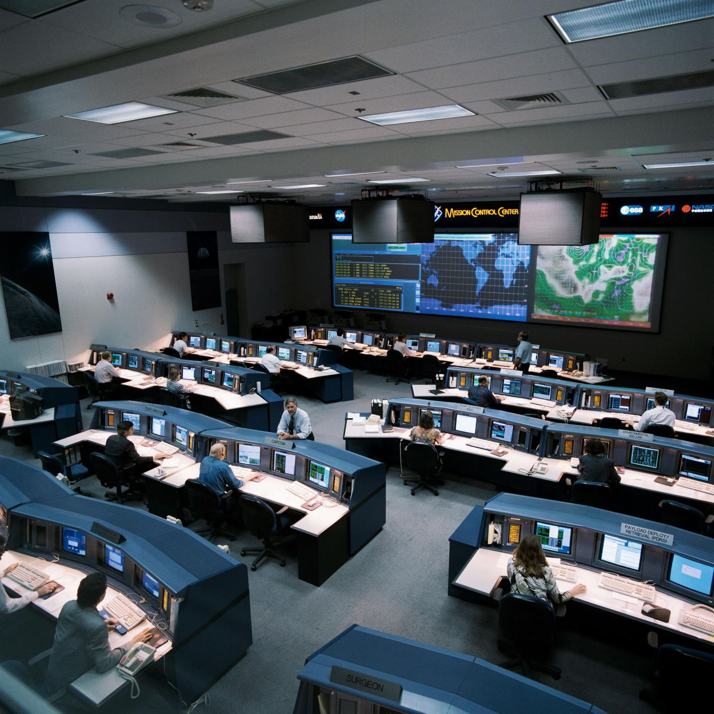
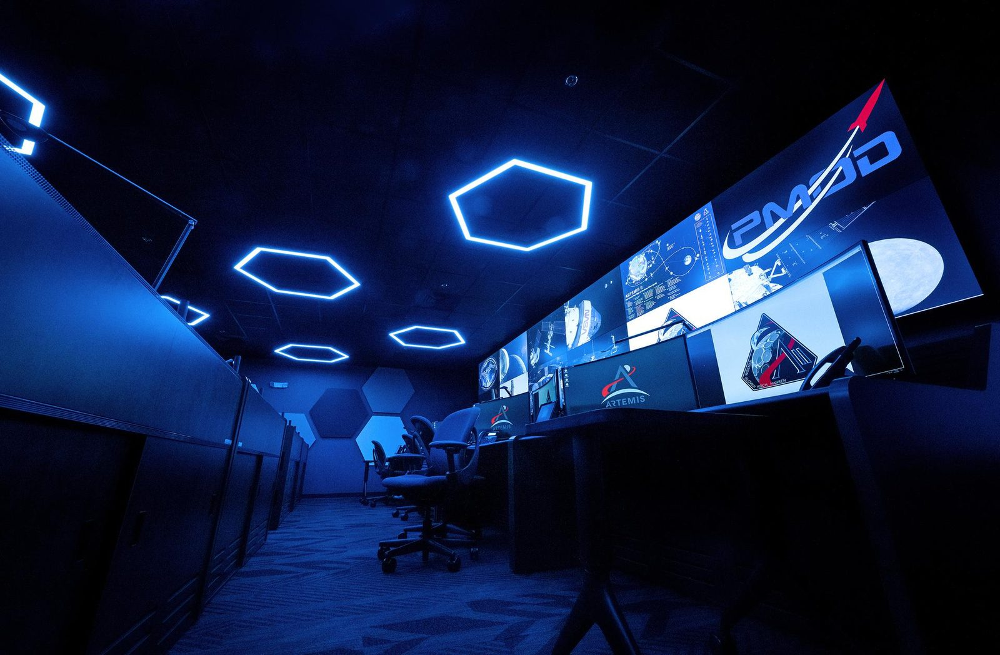
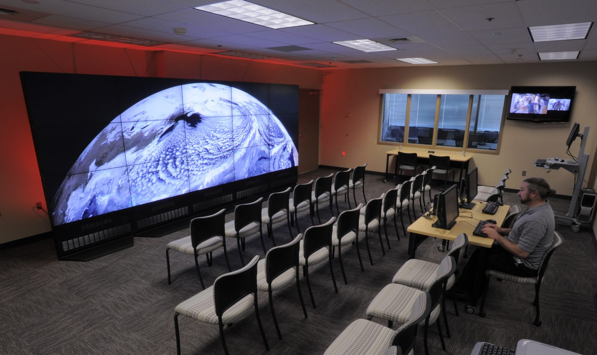
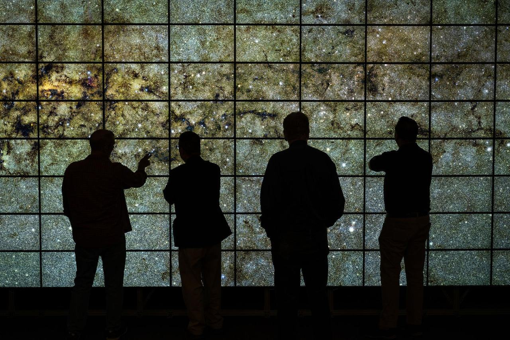
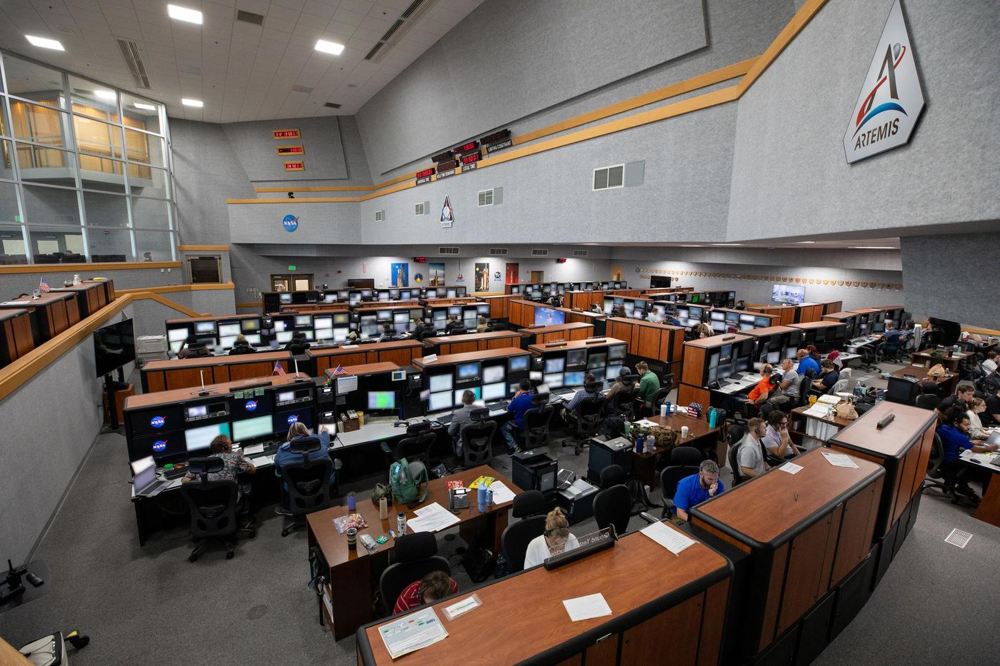

From orbit to answer.
A spacecraft only matters for what it sends home. SSAI flies the missions and then turns the downlink into something a scientist can use — commanding instruments, capturing the raw stream, calibrating it, archiving it, and serving it to the world. For nearly fifty years we have run the consoles, written the pipelines, and kept the data flowing long after launch day.
Every observation has a long journey between the sensor and the published result. We are the team that keeps it intact end to end.
A photon strikes a detector in low-Earth orbit or a million miles out at L1. Seconds later that signal is a packet on a ground-station antenna; minutes later it is telemetry on a console; hours later it is a calibrated, geolocated science product in an archive; days later it is a figure in a paper or a feed driving a weather forecast. SSAI works at every link in that chain — and our value is that none of the links break.
We do not own the spacecraft and we do not build the flight hardware — NASA, NOAA, and their prime contractors do. What we provide is the operational discipline and the software that turn an asset on orbit into a dataset the public can trust: mission planning and command, real-time operations, calibration and validation, the Distributed Active Archive Centers that hold the record, and the modeling and machine-learning systems that extract meaning from it.

NASA / Johnson Space CenterWhat it takes to keep a mission flying.
Six disciplines, one continuous workflow — from the command sent up to the science sent out.
Spacecraft & Instrument Operations
Mission planning, command and control, health-and-safety monitoring, and anomaly response — keeping observatories and their instruments healthy, pointed, and productive across years on orbit.
Flight OperationsGround Data Systems
The pipelines that ingest the downlink, build Level 0 through Level 4 products, and move terabytes a day from antenna to archive without losing a packet or a calibration.
PipelinesDAACs & Data Stewardship
We help operate NASA's Distributed Active Archive Centers — cataloging, preserving, and freely distributing decades of Earth and space science data to researchers worldwide.
Archive & DistributionCalibration & Validation
Field campaigns, instrument cross-comparison, and rigorous cal/val that turn raw counts into trustworthy geophysical measurements scientists can stand behind.
Cal / ValMission Software Engineering
Custom flight and ground software, data systems, and operations tooling — built, tested, and sustained to the standards that 24/7 missions demand.
SoftwareModeling, Assimilation & HPC
Data assimilation, Earth-system modeling, and high-performance computing that fuse billions of observations into coherent, predictive pictures of the planet.
HPC & ModelsA fleet in constant motion.
At any given moment, dozens of the missions we support are crossing the sky — heliophysics observatories at L1, Earth-science platforms in sun-synchronous orbit, geostationary weather satellites holding their station, and deep-space explorers carrying SSAI-operated instruments toward distant targets.
Each one is a node in a living network of ground stations, mission operations centers, and data systems. Our job is to keep every node talking — scheduling contacts, sequencing commands, watching the telemetry, and capturing every bit the moment it comes home. The choreography never stops, because the science never sleeps.
Operations that cannot pause.
A satellite passes overhead for only minutes at a time. In that window, an operations team has to uplink the day's commands, confirm the instrument is healthy, and pull down everything recorded since the last contact — flawlessly, on a schedule set by orbital mechanics rather than by office hours.
SSAI staffs and supports mission operations across NASA centers, from Earth-observing platforms to deep-space science missions. Our controllers monitor spacecraft health and safety, plan and execute observation timelines, respond to anomalies, and coordinate with ground stations around the world. When a mission has waited years and billions of dollars to reach its target, there is no second pass — and that is exactly the standard we operate to.
- Real-time command, control, and telemetry monitoring
- Observation planning, scheduling, and sequencing
- Anomaly detection, response, and recovery
- Ground-station coordination and contact management

NASA / Marshall Space Flight CenterDecades of data, open to all.
A mission's instruments may operate for a decade, but the data it produces must outlive it by generations. SSAI helps operate the data systems and NASA Distributed Active Archive Centers (DAACs) that ingest the downlink, generate science products at every processing level, and preserve the record so that a measurement made today can be reanalyzed fifty years from now.
That stewardship is what makes Earth and space science cumulative. The same archive that holds today's observation also holds the baseline that proves how the planet has changed — and it is freely distributed to researchers, agencies, and the public worldwide. We treat every byte as part of an irreplaceable scientific record.
- Level 0–4 product generation and reprocessing
- Catalog, metadata, and provenance management
- Long-term preservation and open distribution
- Data quality, versioning, and integrity assurance

NASA / Goddard Space Flight CenterRaw observations are scattered and incomplete. Modeling and data assimilation weave them into a single, coherent picture of the Earth and the space around it.
Some of the most demanding computing in science happens after the data lands. Through data assimilation, billions of individual measurements — from satellites, aircraft, balloons, ships, and ground stations — are fused with physics-based models to reconstruct the full state of the atmosphere and ocean, even where no instrument was looking. SSAI scientists and engineers build and run these systems on high-performance computing facilities, producing reanalyses and forecasts that anchor climate and weather science.
Our heritage here is concrete: SSAI played a central role in MERRA-2, NASA's modern-era atmospheric reanalysis, recognized with a 2019 NASA Agency Honor Award. Increasingly, that work is amplified by AI and machine learning — accelerating modeling, sharpening anomaly detection, and pulling signal from petabyte-scale archives faster than any team could by hand.
Petabytes, made legible.
High-performance computing and high-resolution visualization let scientists walk inside a dataset — and find the pattern a single chart would hide.

NASA / Ames Research Center
NASA / Kennedy Space CenterThe proof of good operations is not in a dashboard — it is in the forecasts that hold, the records that endure, and the people who are reached because the data arrived.
Reliable mission operations and data systems are invisible when they work and catastrophic when they fail. Across decades of supporting NOAA and NASA, SSAI has helped keep operational missions running where the stakes are real — including the satellite systems behind NOAA's search-and-rescue capability, which has been credited with aiding roughly 7,000 lives over more than 25 years. Behind every one of those rescues is a chain of operations, downlink, and data processing that simply had to work.
The mission ends. The data is forever.
Once the downlink is captured, calibrated, and archived, the real work begins — turning the view from space into intelligence on the ground.